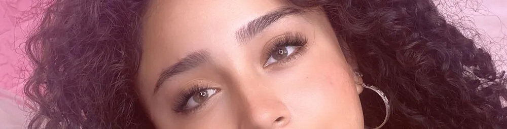

Volume lash extensions are a type of eyelash extension that involves attaching multiple, lightweight lash extensions to each natural lash. The extensions used in volume lash extensions are much thinner and lighter than those used in classic lash extensions. The result is a fuller, more dramatic look than classic lash extensions, which involve attaching a single extension to each natural lash.
Volume lash extensions are applied using a similar technique to classic lash extensions. However, instead of attaching a single extension to each natural lash, the lash artist attaches multiple extensions to each natural lash. This is done using a specialized technique that involves fanning out the lash extensions and attaching them to the natural lash using a small amount of adhesive.
Mega Volume extensions are a type of eyelash extension that uses an advanced technique called “mega volume” or “10OD-20D volume lashing” to create an ultra-full, voluminous look.
Unlike traditional eyelash extensions or even Russian volume extensions, which typically attach multiple fine lashes to a single natural lash, mega volume lashes use extremely lightweight and ultra-fine lashes (sometimes called “mega volume fans”) that consist of 10 or more lashes. These fans are then applied to a single natural lash using a special adhesive that is designed to create a long-lasting bond without damaging the natural lash.
The result is a highly dramatic and voluminous look that can make the eyes appear larger and more prominent. Mega volume eyelash extensions are a popular choice for those who want to achieve a bold and dramatic look that is perfect for special occasions or photoshoots. It’s important to note that mega volume extensions are more time-consuming to apply and require a highly skilled technician who is trained in the mega volume technique.
Volume lash extensions typically last between 4 and 6 weeks, depending on the natural growth cycle of your lashes and how well you care for them.
To care for volume lash extensions, it’s important to avoid rubbing or pulling on your lashes, as this can cause damage and premature shedding. It’s also important to avoid getting your lashes wet for the first 24 hours after application and to avoid using oil-based products around your eyes, as these can break down the adhesive and cause the lashes to fall off prematurely. Never use mascara on your extensions.
Volume lash extensions should only be removed by a trained lash artist. Attempting to remove them yourself can cause damage to your natural lashes. Your lash artist will use a specialized adhesive remover to dissolve the adhesive and gently remove the lash extensions.
Volume lash extensions are a great option if you’re looking for a more dramatic, full-lash look. However, they may not be suitable for everyone. If you have naturally thin or weak lashes, or if you have a history of allergies or sensitivity to eyelash adhesive, volume lash extensions may not be right for you. Our trained lash artist will determine whether volume lash extensions are a good fit for you.
In conclusion, lash extensions have become increasingly popular in recent years as a way to enhance your natural beauty and simplify your daily makeup routine. The maintenance seems costly, but you also need to factor in your reduced spendings on makeup. You won’t need anymore trip to Sephora or Ulta for years. Volume lash extensions eliminate the need to use foundation, powder, eye shadows, eyeliner, mascara.
Think of how much you would save on makeup, you will see the economic benefits of getting lash extensions outweigh the cost. The results are definitely worth the investment. It is important to remember that proper care and hygiene are crucial to prevent damage to the natural lashes and avoid any potential infections. Overall, lash extensions offer a convenient and effective solution for those looking to achieve a fuller and more dramatic lash look.